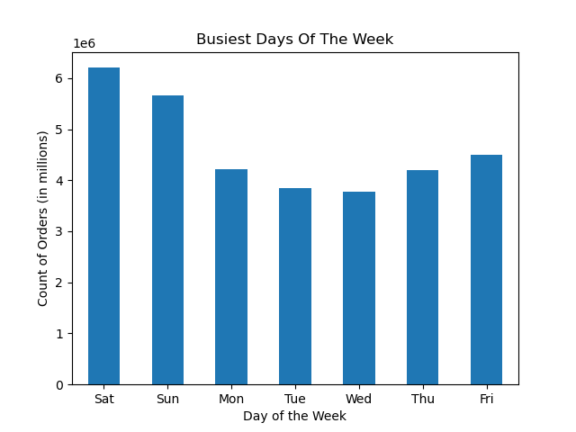
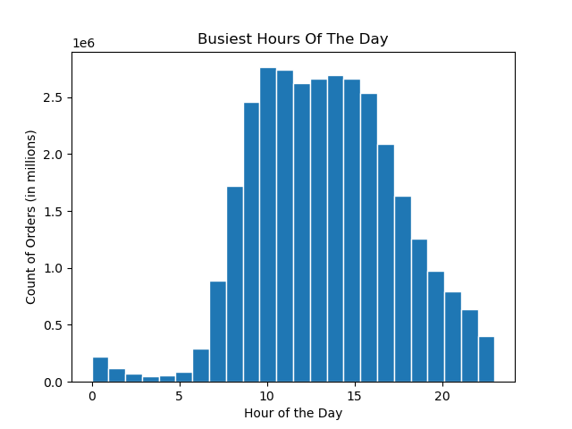
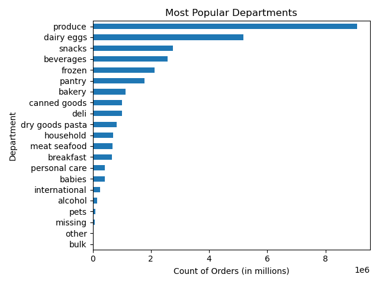
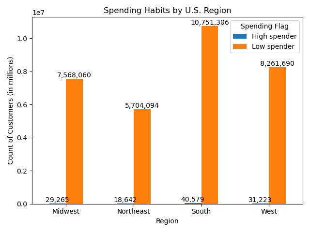

Instacart is an online grocery platform seeking deeper insights into customer purchasing behavior to improve targeted marketing campaigns. While overall sales are strong, stakeholders want to better understand ordering patterns, customer loyalty, spending habits, and product preferences in order to move away from one-size-fits-all marketing.
Kaggle — Instacart Online Grocery Shopping dataset (2017)
Python, pandas, NumPy, matplotlib, seaborn, Jupyter Notebook.
I cleaned and merged multiple Instacart datasets, corrected data types, handled missing values, and created derived variables such as loyalty flags, spending categories, and customer profiles. I then used groupby aggregations and Python visualizations to analyze order timing, department demand, and behavioral differences across regions and segments.
When are the busiest days and hours for orders?


Are there certain types of products that are more popular than others?

Are there differences in spending habits based on a customer’s region?
